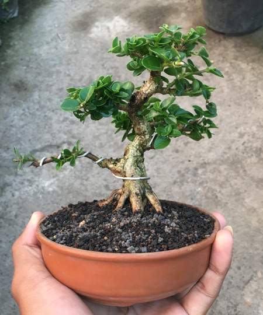
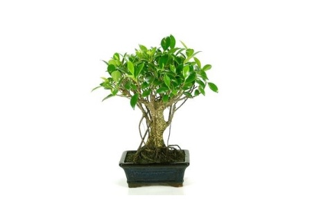

Aunque a simple vista pueda parecernos solo un árbol de pequeño tamaño, nada más lejos de la realidad. Quienes aman estas plantas saben que su cultivo implica un auténtico arte. Y, por eso mismo, distinguir entre los distintos tipos de bonsái que existen supone descubrir la magnitud de esta técnica de jardinería. Porque, por más que lo creamos, un bonsái no es solo un árbol de tamaño reducido en una bandeja. El bonsái esconde tras de sí una filosofía sustentada en la pasión por la naturaleza pero, también, en su respeto.
Los distintos tipos de bonsái responden, precisamente, a esa consideración hacia su crecimiento. Porque, según las técnicas orientales, parte del éxito de los cuidados del bonsái de interior o de exterior consiste en dejarlos crecer con cierta libertad. Porque, por más que podamos guiar en gran medida su forma gracias a cómo podar un bonsái o cómo alambrarlo, lo cierto es que no podemos imponer nuestra voluntad a su crecimiento. De hacerlo, es más que probable que se resintiera su bienestar. Y eso es, precisamente, lo que no queremos.
Así que descubramos los tipos de bonsái que existen. Una forma de disfrutar, todavía más, de una planta que enamora a quienes se dedican a su cultivo.
Lo primero que hay que saber al hablar de los tipos de bonsái que existen es que hay varias formas de catalogarlo. Hablamos de una técnica de jardinería con siglos de tradición y que, además, cuenta con una importante simbología. Aunque los nombres nos resulten impronunciables, no está de más descubrir lo que se esconde tras los nombres de los distintos tipos de bonsái. Unas denominaciones que, traducidas del japonés, significan cosas tan singulares como intuición, serpentina o asiento de mujer.
Pero veamos en detalle los tipos de bonsái que existen según su clasificación. Una que no se hace desde un único punto de vista, y que puede hacer que nuestra planta tenga distintas denominaciones.
Es la clasificación más básica de los distintos tipos de bonsái. La altura de la planta hace que se denomine de una u otra manera.
Denominación para bonsáis que miden menos de cinco centímetros de altura. Son los bonsáis más pequeños que existen, y no son nada habituales. Se suelen plantar con semillas en contenedores de pequeño tamaño, y no suelen tener más de dos ramas.

Para aquellos bonsáis que no superan los 15 centímetros de altura. La traducción de su nombre lo dice todo: significa «que cabe en la palma de la mano».
Uno de los tipos de bonsái más comunes. Oscilan entre los 15 y los 25 centímetros de altura. Por la sencillez de su cultivo, suelen ser los recomendados para la iniciación en el cultivo del bonsái.

Otro de los tipos de bonsáis más habituales. Su medida oscila entre los 21 y los 30 centímetros.
Solo apto para quienes ya tienen soltura en el cultivo del bonsái. Hablamos de uno de los bonsáis de mayor tamaño: oscilan entre los 30 y los 60 centímetros. Unas dimensiones fruto de muchos años de cultivo que hacen que, en su mayoría, estos tipos de bonsái solo puedan verse en colecciones de amantes de estas plantas.
Su tamaño no deja indiferente a nadie. Y es que nos referimos a un bonsái que oscila entre los 60 y los 120 centímetros. Habitualmente, se utilizan para decorar jardines o patios.
Otra de las clasificaciones más importantes en el mundo de los bonsáis. De hecho, es la nomenclatura que más se utiliza entre los expertos en estas plantas. La forma del tronco, su inclinación y la copa son lo que definen a cada uno de estos bonsáis.
Se caracterizan por el tronco recto, que va en disminución desde la base hacia las ramas superiores.
Esa es, literalmente, su traducción. La principal característica de este tipo de bonsáis es que, como los Chokkan, son verticales pero guardan una importante diferencia. En lugar de un tronco recto, su figura es sinuosa y curvada.
Reciben este nombre todos los bonsáis que han sido cultivados dándoles una inclinación por debajo de los 45 grados. Suelen contar en el lado contrario con un buen número de raíces a la vista. Por último, otro detalle significativo es que suelen contar con una copa triangular.
Su nombre lo dice todo. Es, probablemente, uno de los tipos de bonsái más espectaculares. Se caracteriza porque el ápice del árbol se encuentra por debajo de la altura de la maceta.
La traducción lo dice todo: árbol barrido por el viento. Estos tipos de bonsái pretenden emular a los árboles que viven en zonas ventosas. Su principal característica es que tanto el tronco como las ramas se presentan inclinadas.
Su forma homenajea la caligrafía oriental, representándola con la disposición de sus ramas y tronco. Sus características: apenas tiene ramas, y el tronco es esbelto.
Uno de los tipos de bonsáis más hermosos. No solo cuentan con varios especímenes plantados en un mismo contenedor. Además, es imprescindible que sean impares y que el conjunto guarde un aspecto triangular.
¿Tienes alguno de estos tipos de bonsái en casa? Si es asi, espero puedas conseguir mas como los de esta lista